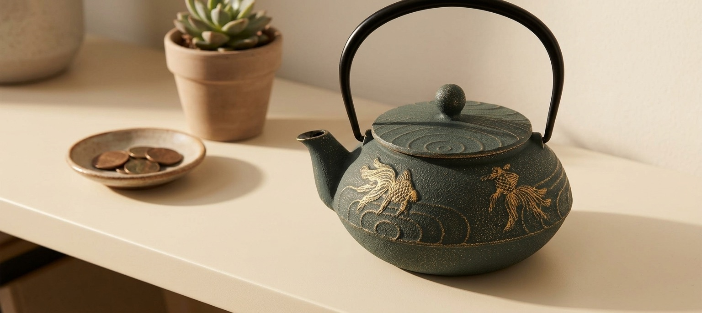
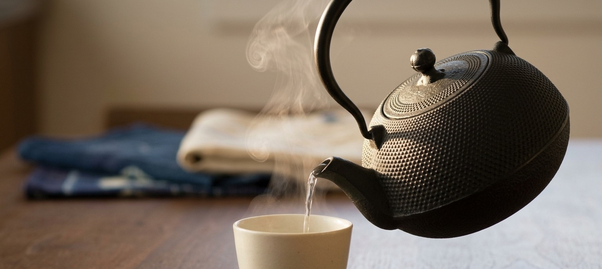
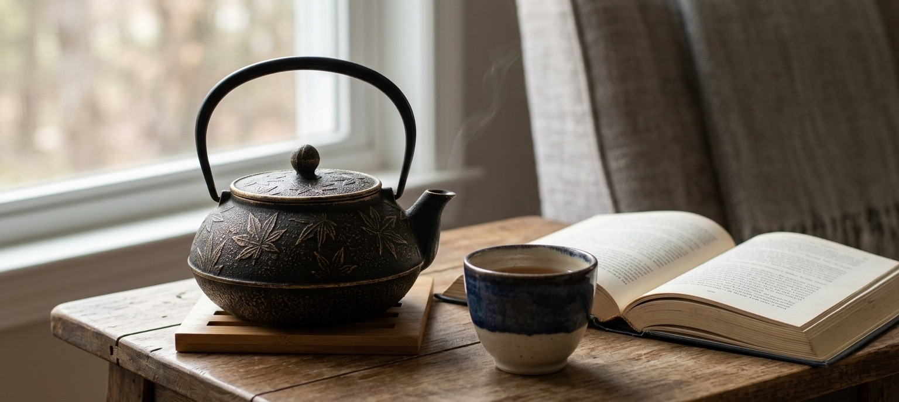
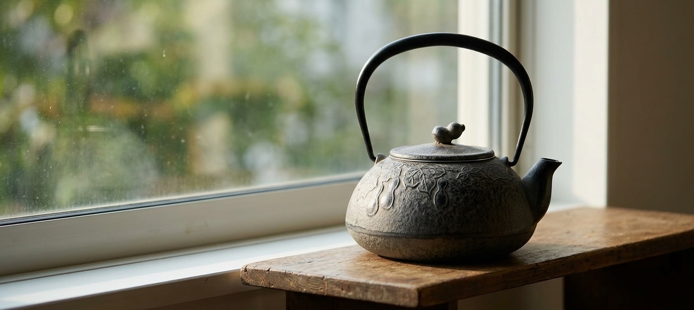

Not four kettles competing for the same job -- four different pieces, each earning its place for a specific, honest reason. Two change something about the tea itself, one is built to age instead of stay pristine, and one earns its spot on a shelf more than on a stove. All four are sold today and made in Japan.
Oigen (及源頔造) has been casting iron in Oshu, Iwate since 1852. This kettle's arare (hailstone) surface -- the dense grid of small raised bumps covering the body -- isn't just decorative: historically the texture increases the iron's surface area, which is part of why iron kettles like this one are prized for a specific, testable effect -- water boiled in unlined cast iron picks up trace iron that reacts with tannins in tea, softening bitterness into something rounder and milder. It's an old piece of Japanese kitchen folk-science with a real chemical basis, not a marketing claim invented for this listing. This is the heaviest and most expensive piece here at $202.60, reflecting Oigen's reputation as one of the two major nanbu tekki foundries still casting kettles by hand -- backed by 50 reviews averaging 4.3 stars, with the most common note being exactly what you'd expect: it makes a genuinely mellow cup, and it needs to be dried out after use since the interior isn't enameled.

As an Amazon Associate, I earn from qualifying purchases.
This is a simpler physical fact than the last one: cast iron has far more thermal mass than glass or thin ceramic, so a full pot keeps radiating stored heat back into the tea long after the kettle it came from has gone cold. Iwachu -- a Morioka ironware maker with a company history of over 100 years -- builds this particular teapot with an enamel-coated interior (so, unlike the Oigen kettle above, no iron taste and no drying ritual required) and a stainless mesh infuser for loose leaf. The gold maple (momiji) leaves scattered across the matte black body are a seasonal motif with no deeper functional claim attached -- we're not going to invent one. At $139.95 it carries Amazon's Choice and a 4.7-star average across 30 reviews, and at the time of writing Amazon shows only 1 left in stock, so if the maple pattern is the one that catches your eye, don't expect it to wait.

As an Amazon Associate, I earn from qualifying purchases.
Nambu tekki (南部鉄器) is a certified traditional craft of Iwate prefecture, and most pieces you'll see -- including the other three on this page -- are finished glossy and smooth. This one isn't. It's left in its raw, matte, sand-cast state, grainy like weathered stone rather than polished metal, which means it doesn't hide wear the way a glossy finish does -- it's built to visibly age with handling instead of staying showroom-perfect. The knob on the lid is shaped like a hyotan (gourd), a Japanese motif for warding off misfortune; the most famous historical use of the symbol was as Toyotomi Hideyoshi's battle standard, the "sennari byotan" (thousand-gourd banner), which grew a gourd for every victory. This is the newest listing on this page and, as of this writing, has no Amazon reviews yet -- we're including it for the surface and the motif, both visible in the photos, not for a track record.

As an Amazon Associate, I earn from qualifying purchases.
Iwachu's own product description is direct about this one: the goldfish design is meant to symbolize good fortune, a kingyo (literally "gold fish") motif tied to wealth and luck that goes back to summer festival culture in Japan. The green-and-gold coloring is designed to recreate the patina found on antique metalwork, which is why this piece reads less like a fresh kettle and more like something already a little precious. Reviewers consistently mention exactly this -- it's the one they display rather than boil water in daily. At $139.95 with a 5.0-star average across 10 reviews, it's the smallest sample size here, though the pattern (100% five-star) is consistent. One reviewer noted the green comes through darker and greyer in person than in the listing photos -- still handsome, just worth knowing going in.
As an Amazon Associate, I earn from qualifying purchases.
None of these four is trying to do the others' job -- the Oigen kettle won't stay warm the way the Kaede teapot does, and the gourd-knob pot isn't the one you'd put front-and-center for a compliment the way the goldfish one is. What they share is that each earns its place through something specific and real: a chemical reaction that actually changes how the tea tastes, a thermal property that actually keeps it hot, a finish that's deliberately left unfinished, or a motif the maker itself says is about luck. That's the actual range of what "a life with cast iron" can mean -- not one dramatic upgrade, but four small, different, honest ones.
This page contains affiliate links -- if you buy through one, it costs you nothing extra and helps support this site. The gourd-knob teapot above is a newer listing with no Amazon reviews yet at time of writing, and the Kaede teapot showed only 1 unit in stock at time of writing; both are noted honestly above rather than implied otherwise. The iron/tannin and thermal-mass claims reflect commonly cited references on nanbu tekki cast iron cookware, not manufacturer marketing claims specific to any one product.